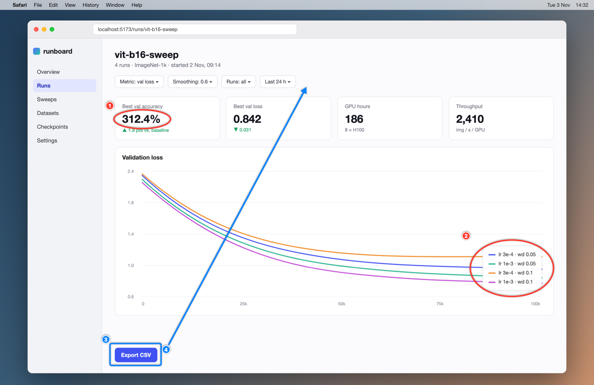

# Screen capture · Snapshot · 0:19 Numbered marks (#1, #2, …) drawn in the images are the user's own annotations; each is referenced in the transcript at the moment it was drawn. Screenshots: - frame 1 · 1568×1018 · frame_01.png ## Transcript **[00:00 · frame 1]** Okay. Quick review of the run dashboard. This best [#1 circled (301,290)-(450,340)] accuracy says 312%. That has to be a units bug. It's probably multiplying by 100 twice. The legend [#2 circled (1241,634)-(1461,784)] here sits right on top of the curves. Can we move it below the chart? And this export [#3 box around (290,908)-(425,966)] button is floating down here. It should go [#4 arrow from (446,910) pointing at (809,230)] up next to the filters.